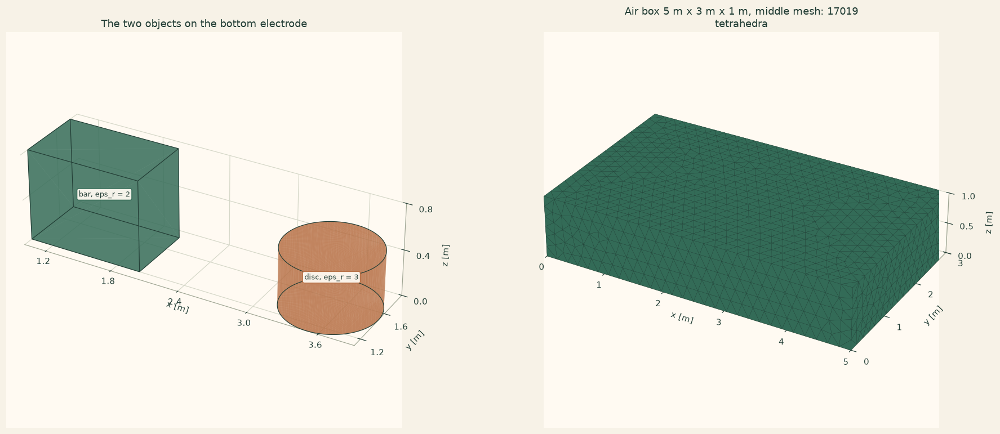

Docs › Examples › Electric sensor: dielectric objects in a box
Electrostatics · 3D
Electric sensor: dielectric objects in a box
A capacitive sensor box with a driven top and a grounded bottom electrode: two dielectric objects standing on the bottom electrode leave their imprint in the surface charge on the top electrode.
Run locally with OneSimulation. The example downloads are free. Running them requires an activated runtime. OneSimulation 1.0 · CPython 3.13 on macOS (Apple Silicon), Ubuntu 22.04 (x86-64), and Windows x64. Installation and activation · View pilot plans. Scope of the reference checks.

What it computes
OneSimulation reads the air box and the two objects (a bar with eps_r = 2 and a disc with eps_r = 3) from STEP files, meshes the box with tetrahedra that embed the objects, assigns the permittivity region by region and solves 3D electrostatics with quadratic elements on three meshes; the charge on the electrodes is the reaction of the potential. The script that builds the STEP files comes with the notebook.
What it checks
The capacitance of 139.751 pF lies between the variational bounds of Thomson (138.58 pF) and Dirichlet (141.51 pF) and changes by 0.002 % between the two finest meshes; the electrode charges balance to 1e-14; with the objects extended to the full height, where the bounds meet, the capacitance matches the exact 147.027 pF within -0.033 %.
Geometry
The notebook starts at the import of the CAD files dielectric_inclusion_sensor.step, dielectric_inclusion_sensor_bar.step, dielectric_inclusion_sensor_bar_column.step, dielectric_inclusion_sensor_disc.step, dielectric_inclusion_sensor_disc_column.step: STEP (AP242), readable by any CAD program, with the names of the faces that the boundary conditions use. Put them next to the notebook.


The geometry script
The script dielectric_inclusion_sensor_geometry.py builds the geometry with the CAD objects of OneSimulation and writes the files. Change a dimension there, run it, and run the notebook again.
"""Geometry of the OneSimulation example "Electric sensor: dielectric objects in a box".
Builds the air box of the sensor, 5 m x 3 m and 1 m high, with the CAD objects of OneSimulation and
writes dielectric_inclusion_sensor.step with the face groups top (the driven electrode, z = 1 m),
bottom (the grounded electrode, z = 0) and walls. The two dielectric objects standing on the bottom
electrode go to one file each: a rectangular bar (1.0 m x 0.6 m, 0.8 m high, centred at x = 1.5 m,
y = 1.5 m) to dielectric_inclusion_sensor_bar.step and a disc (radius 0.4 m, 0.5 m high, centred at
x = 3.5 m, y = 1.5 m) to dielectric_inclusion_sensor_disc.step. The same two objects extended to the
full height of the box, used for the exact check, go to ..._bar_column.step and ..._disc_column.step.
"""
from onesim.cad.d3 import Box, Cylinder
length, width, height = 5.0, 3.0, 1.0
box = Box(length=length, width=width, height=height)
faces = box.boundaries
box.grouped(
top=faces.z_max,
bottom=faces.z_min,
walls=faces.x_min | faces.x_max | faces.y_min | faces.y_max,
).save("dielectric_inclusion_sensor.step")
for suffix, bar_height, disc_height in (("", 0.8, 0.5), ("_column", height, height)):
Box(length=1.0, width=0.6, height=bar_height, origin=(1.0, 1.2, 0.0)).save(
f"dielectric_inclusion_sensor_bar{suffix}.step"
)
Cylinder(radius=0.4, length=disc_height, origin=(3.5, 1.5, 0.0)).save(
f"dielectric_inclusion_sensor_disc{suffix}.step"
)The notebook
The complete notebook, cell by cell. Run it to produce the figures and the comparison printout.
A capacitive sensor finds objects by the charge they draw onto an electrode. The box is 5 m long, 3 m wide and \(h=1\) m high, with an electrode on its top held at \(V_0=1\) V and a grounded electrode on its bottom; the side walls are insulating. Two dielectric objects stand on the bottom electrode: a rectangular bar of \(1.0\times0.6\) m, 0.8 m high, with \(\varepsilon_r=2\), and a disc of radius 0.4 m, 0.5 m high, with \(\varepsilon_r=3\). The potential follows from
with \(V\) and the normal displacement \(D_n\) continuous on the surfaces of the objects. The sensor signal is the surface charge on the top electrode, \(\sigma=\mathbf D\cdot\mathbf n=-\varepsilon_0E_z\), and its total, the charge \(Q=CV_0\).
The air box comes from the CAD file dielectric_inclusion_sensor.step with the face groups top, bottom and walls; the objects from dielectric_inclusion_sensor_bar.step and ..._disc.step, and the same objects extended to the full height from ..._bar_column.step and ..._disc_column.step. The script dielectric_inclusion_sensor_geometry.py builds them with the CAD objects of OneSimulation.
| face | condition |
|---|---|
top | \(V=V_0\) |
bottom | \(V=0\) |
walls | \(\mathbf D\cdot\mathbf n=0\) |
| surfaces of the objects | continuous \(V\) and \(D_n\) (interfaces inside the mesh) |
Reference. The capacitance has no closed form, but the two variational principles of electrostatics bound it from both sides (J. D. Jackson, Classical Electrodynamics, 3rd ed., Sec. 1.12 and the capacitance bounds in the problems of Chapter 1; G. Pólya and G. Szegő, Isoperimetric Inequalities in Mathematical Physics, 1951). Dirichlet's principle with the uniform field \(V=V_0z/h\) as trial potential gives the upper bound, Thomson's principle with a vertical displacement that is constant in each column gives the lower bound:
where \(t(x,y)\) is the height of the object in the column at \((x,y)\) and \(V_i\) the volume of object \(i\). When the objects fill the full height (\(t=h\)) both bounds meet: the field stays uniform and \(C=\varepsilon_0\big(A+\sum_i(\varepsilon_{r,i}-1)A_i\big)/h\) exactly.
import numpy as np
from onesim.cad.d2 import Plane
from onesim.cad.exchange import load
from onesim.materials import VacuumPermittivity
from onesim.meshing import LocalRefinement, TetrahedralMesher
from onesim.numerics import Numerics
from onesim.numerics.fem import FiniteElement, Lagrange
from onesim.numerics.linear import SparseDirect
from onesim.physics.electrostatics import (
FixedPotential,
PoissonEquation,
ZeroNormalElectricDisplacement,
)
from onesim.results.comparisons import convergence
from onesim.simulation import Problem, Simulation, regionwise
from onesim.visualization import plots, theme
theme.set()Geometry and mesh
load returns the box with its named faces and the objects. The tetrahedral mesher embeds the objects, so their surfaces run along faces of the mesh, and refines inside them. Three meshes with 0.25, 0.18 and 0.13 m in the air (two thirds of that in the objects) make the mesh study; the columns get one mesh of the middle size.
box = load("dielectric_inclusion_sensor.step")
faces = box.boundaries
objects = {
name: load(f"dielectric_inclusion_sensor_{name}.step")
for name in ("bar", "disc", "bar_column", "disc_column")
}
length, width, height = box.size
sizes = (0.25, 0.18, 0.13)
generate = lambda bar, disc, size: TetrahedralMesher(
target_size=size,
embedded_regions=(bar, disc),
refinements=(
LocalRefinement(region=bar, target_size=size / 1.5),
LocalRefinement(region=disc, target_size=size / 1.5),
),
).generate(box)
meshes = [generate(objects["bar"], objects["disc"], size) for size in sizes]
column_mesh = generate(objects["bar_column"], objects["disc_column"], sizes[1])
view = plots.Camera(elevation=30, azimuth=-60)
fig = plots.figure(1, 2, size=(15, 6))
plots.geometry(
[objects["bar"].named("bar, eps_r = 2"), objects["disc"].named("disc, eps_r = 3")],
camera=view,
title="The two objects on the bottom electrode",
ax=fig[0],
)
plots.mesh(
meshes[1],
groups=("all",),
legend=False,
camera=view,
title=f"Air box 5 m x 3 m x 1 m, middle mesh: {meshes[1].cell_count} tetrahedra",
ax=fig[1],
)
plots.show()Model
regionwise gives each object its permittivity; the tests are the boxes of the bar and the disc taken from their CAD bounds. Quadratic elements. The charge on the electrodes is the reaction of the potential on the face.
voltage, eps0 = 1.0, float(VacuumPermittivity().evaluate())
relative = {"bar": 2.0, "disc": 3.0}
(bx0, by0, _), (bx1, by1, _) = objects["bar"].bounding_box
(dx0, dy0, _), (dx1, dy1, _) = objects["disc"].bounding_box
radius, centre = (dx1 - dx0) / 2, ((dx0 + dx1) / 2, (dy0 + dy1) / 2)
tops = {
"": (objects["bar"].size[2], objects["disc"].size[2]),
"_column": (height, height),
}
permittivity = lambda suffix: regionwise(
(
(
lambda p: (p[:, 0] >= bx0)
& (p[:, 0] <= bx1)
& (p[:, 1] >= by0)
& (p[:, 1] <= by1)
& (p[:, 2] <= tops[suffix][0]),
relative["bar"] * eps0,
),
(
lambda p: (np.hypot(p[:, 0] - centre[0], p[:, 1] - centre[1]) <= radius)
& (p[:, 2] <= tops[suffix][1]),
relative["disc"] * eps0,
),
),
default=eps0,
unit="F/m",
)
models = {
suffix: PoissonEquation(
domain=box.volume, permittivity=permittivity(suffix), charge_density=0.0
)
for suffix in tops
}
problems = {
suffix: Problem(
name="Electric sensor",
geometry=box,
physics=(model,),
boundary_conditions=(
FixedPotential(boundary=faces.top, physics=model, value=voltage),
FixedPotential(boundary=faces.bottom, physics=model, value=0.0),
ZeroNormalElectricDisplacement(boundary=faces.walls, physics=model),
),
)
for suffix, model in models.items()
}
numerics = Numerics(
spatial=FiniteElement(element=Lagrange(order=2)), linear_solver=SparseDirect()
)
results = [
Simulation(problem=problems[""], mesh=mesh, numerics=numerics).solve_stationary()
for mesh in meshes
]
column = Simulation(
problem=problems["_column"], mesh=column_mesh, numerics=numerics
).solve_stationary()Results
The capacitance on the three meshes against the two bounds, the charge balance of the two electrodes, the surface charge above the middle of each object against the value of a vertical column of air and dielectric in series, and the columns against the exact capacitance.
potentials = [result.field(models[""].potential) for result in results]
capacitance = [potential.reaction(faces.top) / voltage for potential in potentials]
study = convergence(capacitance, sizes)
area = length * width
footprints = {"bar": (bx1 - bx0) * (by1 - by0), "disc": np.pi * radius**2}
heights = dict(zip(relative, tops[""]))
upper = (
eps0
/ height**2
* (
area * height
+ sum((relative[n] - 1) * footprints[n] * heights[n] for n in relative)
)
)
lower = eps0 * (
(area - sum(footprints.values())) / height
+ sum(
footprints[n] / (height - heights[n] + heights[n] / relative[n])
for n in relative
)
)
exact_column = (
eps0 * (area + sum((relative[n] - 1) * footprints[n] for n in relative)) / height
)
print(
f"empty box {1e12 * eps0 * area / height:.3f} pF; bounds with the objects: lower {1e12 * lower:.3f} pF, upper {1e12 * upper:.3f} pF"
)
print(
"cell size in air [m] tetrahedra C [pF] position between the bounds (Q_top + Q_bottom) / Q_top"
)
for size, mesh, C, potential in zip(sizes, meshes, capacitance, potentials):
print(
f"{size:20.2f} {mesh.cell_count:12d} {1e12 * C:9.4f} {(C - lower) / (upper - lower):24.3f}"
f" {(potential.reaction(faces.top) + potential.reaction(faces.bottom)) / potential.reaction(faces.top):+24.1e}"
)
print(
f"mesh study: change between the two finest meshes {100 * study.change:.3f} %, extrapolated {1e12 * study.extrapolated:.4f} pF"
)
field = results[-1].field(models[""].electric_field)
probes = {"bar": (1.5, 1.5), "disc": centre}
for name, (x, y) in probes.items():
sigma = -eps0 * field.evaluate(np.array([[x, y, height - 1e-6]]))[0, 2]
series = eps0 * voltage / (height - heights[name] + heights[name] / relative[name])
print(
f"surface charge above the {name:4s} {1e12 * sigma:8.3f} pC/m^2 series column {1e12 * series:8.3f} pC/m^2 "
f"empty box {1e12 * eps0 * voltage / height:8.3f} pC/m^2"
)
C_column = column.field(models["_column"].potential).reaction(faces.top) / voltage
print(
f"objects over the full height: C = {1e12 * C_column:.4f} pF, exact {1e12 * exact_column:.4f} pF, "
f"deviation {100 * (C_column / exact_column - 1):+.3f} %"
)Figure
The surface charge on the top electrode, the field strength in the vertical section through both objects, the surface charge along the middle line \(y=1.5\) m against the series-column estimate, and the mesh study between the two bounds.
x = np.linspace(0.01, length - 0.01, 400)
line = np.column_stack((x, np.full_like(x, 1.5), np.full_like(x, height - 1e-6)))
series_line = (
eps0
* voltage
/ np.where(
(x >= bx0) & (x <= bx1),
height - heights["bar"] + heights["bar"] / relative["bar"],
np.where(
np.abs(x - centre[0]) <= radius,
height - heights["disc"] + heights["disc"] / relative["disc"],
height,
),
)
)
fig = plots.figure(2, 2, size=(15, 11))
plots.surface(
field,
boundary=faces.top,
component=lambda E, position: -1e12 * eps0 * E[:, 2],
limits=(8.0, 15.0),
contours=15,
subdivisions=2,
label="σ [pC/m²]",
title="Surface charge on the top electrode",
ax=fig[0],
)
plots.section(
field,
plane=Plane(origin=(0.0, 1.5, 0.0), normal=(0.0, 1.0, 0.0)),
component=lambda E, position: np.linalg.norm(E, axis=1),
limits=(0.3, 1.8),
contours=16,
subdivisions=2,
label="|E| [V/m]",
xlabel="x [m]",
ylabel="z [m]",
title="Field strength in the section y = 1.5 m",
ax=fig[1],
)
plots.line(
x,
{"simulation": -1e12 * eps0 * field.evaluate(line)[:, 2]},
reference={"series columns": 1e12 * series_line},
hlines={"empty box": 1e12 * eps0 * voltage / height},
xlabel="x [m]",
ylabel="σ on the top electrode [pC/m²]",
title="Surface charge along y = 1.5 m",
legend="upper right",
ax=fig[2],
)
plots.line(
list(sizes),
{"simulation": [1e12 * C for C in capacitance]},
hlines={
"upper bound (Dirichlet)": 1e12 * upper,
"lower bound (Thomson)": 1e12 * lower,
},
markers=True,
xlabel="cell size in the air [m]",
ylabel="capacitance [pF]",
title="Mesh study and variational bounds",
legend="center right",
ax=fig[3],
)
plots.show()Going further
Move the objects, change their height or permittivity in dielectric_inclusion_sensor_geometry.py and in the model, and watch the imprint in the surface charge: a high, narrow object shows a sharper but weaker peak than a low, wide one of the same volume. Split the top electrode into strips and read each with reaction, as a sensor array does.